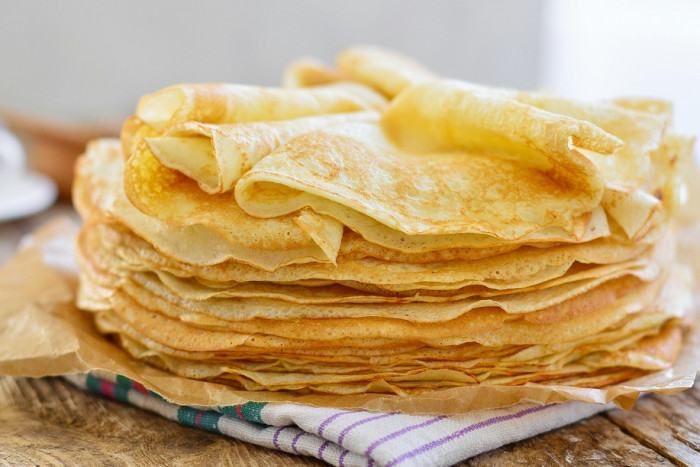

Блины
СПОСОБ ПРИГОТОВЛЕНИЯ1.В большой миске взбить яйца и сахар.
2.Часть молока подогреть, посолить и тщательно перемешать со взбитыми яйцами и сахаром.
3.В полученную смесь постепенно добавлять муку, постоянно перемешивая, чтобы не было комочков.
4.Добавить немного соды, соль и масло. Перемешать.
5.Добавить остальное молоко и взбить. Тесто должно быть в меру жидким.
6.Разогреть сковороду.
7.Обжарить блин с обеих сторон до золотистого цвета.

Приятного аппетита!
Больше информации здесь \/ \/ \/
И.Н.Ф.А